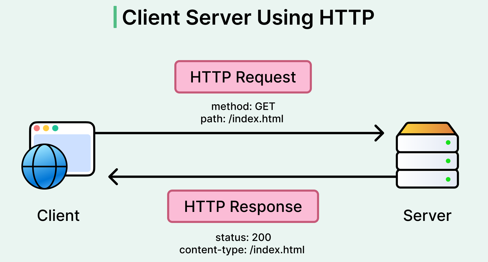
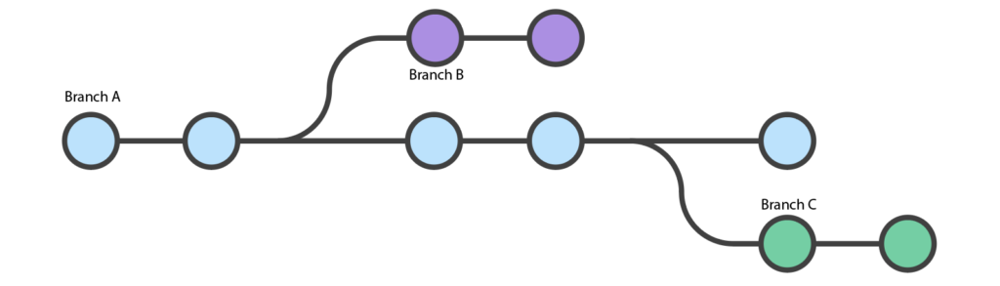
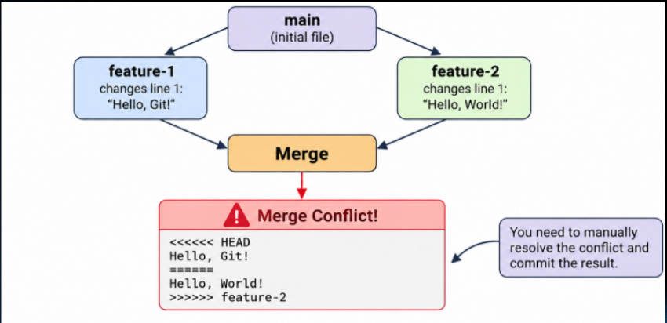

Bazele comunicării pe web și versionarea codului în echipă
Web Fundamentals
HTTP --> HyperText Transfer Protocol
HTTP este un protocol bazat
pe modelul cerere-răspuns (request-response).
Acesta stă la baza internetului împreună cu alte concepte fundamentale precum HTML și URL:
HTML (HyperText Markup Language) --> limbajul prin care structurăm pagini web
URL (Uniform Resource Locator) --> o adresă unică a unei resurse de pe internet (ex: un site web)

Modelul cerere-răspuns (Client → Server → Client)
Metode HTTP
Aceste metode specifice HTTP-ului definesc acțiunea dorită asupra unei resurse de pe server
(operațiile de bază CRUD: Create, Read, Update, Delete). Apasă pe oricare metodă pentru detalii:
HTTP Status Codes
Sunt coduri numerice formate din trei cifre care indică rezultatul procesării unei cereri de către server:
Pentru mai multe detalii și exemple vizuale pentru fiecare cod în parte, poți verifica
http.cat!
Atunci când lucrezi la un proiect software (singur sau în echipă), ai nevoie de un mod sigur
de a salva istoricul modificărilor și de a colabora fără să suprascrii munca altora:
Git --> un sistem de versionare al codului
care rulează local pe calculatorul tău și urmărește fiecare modificare adusă fișierelor din proiect
GitLab (la fel ca GitHub) --> o platformă web care găzduiește proiecte Git în cloud
Repository (Repo) --> folderul proiectului monitorizat de Git care conține toate fișierele
codului împreună cu întregul istoric al versiunilor
Basic Git Commands
Fluxul de lucru zilnic în Git se bazează pe câteva comenzi esențiale pe care le rulezi în terminal:
git clone <url> --> Descarcă pe calculatorul tău o copie completă
a unui repo existent de pe GitLab / GitHub
git add <fisier> (sau git add .) -->
Marchează modificările din folderul de lucru pentru următorul commit
git commit -m "mesaj" --> Salvează permanent în istoricul local un „snapshot”
al modificărilor pregătite, însoțit de un mesaj scurt care explică ce ai schimbat
git push --> Trimite commit-urile făcute local către repo-ul remote (de pe GitLab),
ca să fie vizibile și pentru restul echipei
git pull --> Descarcă și integrează automat în proiectul tău local cele mai noi
modificări urcate de colegi pe repo-ul remote
Branching & Checkout
Un branch (ramură) este o linie independentă de dezvoltare. În loc să lucrezi direct
pe branch-ul principal (main / master) și să riști să strici codul funcțional, îți creezi un branch separat
pentru fiecare funcționalitate nouă sau bugfix.
git checkout <nume-branch> (sau varianta echivalentă dar modernă
git switch <nume-branch>) --> Mută mediul tău de lucru pe alt branch,
actualizând fișierele din folder ca să reflecte starea acelui branch.
git checkout -b <nume-branch> --> Creează un branch nou pornind din
punctul curent și te mută instantaneu pe el

Ramificarea dezvoltării în Git: fiecare branch evoluează izolat față de linia principală
Git Colaborativ
Când mai mulți oameni scriu cod în același timp, apar situații în care trebuie să pui modificări deoparte,
să unești branch-uri, să rezolvi suprapuneri sau să anulezi greșeli:
Stash (git stash) --> Salvează temporar modificările
necommitte-uite într-o „stivă” ascunsă și curăță folderul de lucru, ca să poți schimba rapid branch-ul;
le aduci înapoi ulterior cu git stash pop
Fluxul git stash: pui modificările deoparte și le recuperezi când revii
Merge (git merge <branch>) --> Unește istoricul unui
branch (ex. feature-1) în branch-ul pe care te afli (ex. main), păstrând intact
istoricul cronologic al ambelor ramuri
Conflicte (Merge Conflicts) --> Apar atunci când două branch-uri au modificat diferit
aceeași linie din același fișier. Git oprește merge-ul și marchează zona cu
<<<<<<< HEAD, ======= și >>>>>>>,
cerându-ți să alegi manual varianta corectă și să faci un commit final

Exemplu de Merge Conflict când două branch-uri modifică aceeași linie